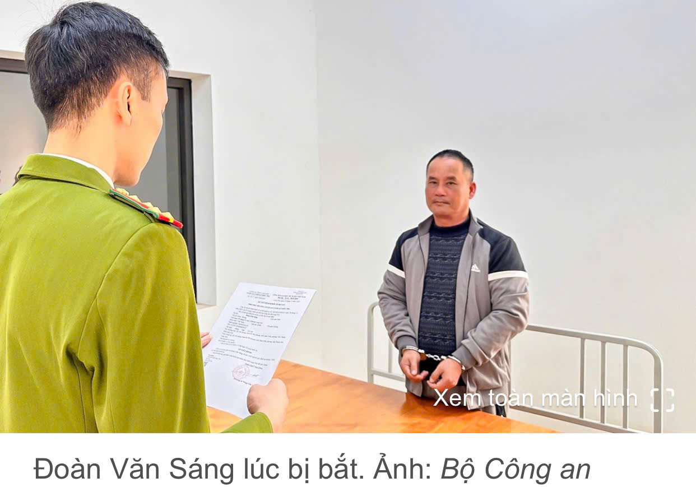
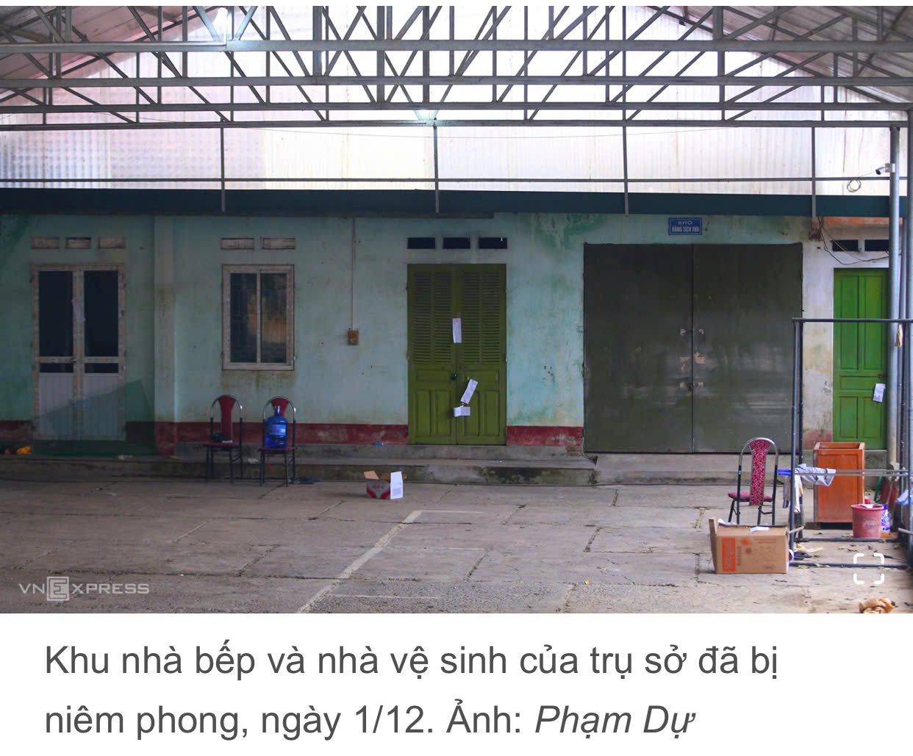

🔥 Đoàn Văn Sáng bị bắt về tội giết người ở Lạng Sơn (Nguồn: vnexpress.net)
Đoàn Văn Sáng, cựu Đội phó quản lý thị trường số 4, bị cáo buộc sát hại người đàn ông 36 tuổi tại trụ sở đơn vị ở xã Hữu Lũng, phi tang xác. Chiều 3/12, Công an tỉnh Lạng Sơn cho biết Cơ quan Cảnh sát điều tra đã khởi tố, tạm giam Đoàn Văn Sáng, 57 tuổi, cựu Đội phó Quản lý thị trường số 4 thuộc Chi cục quản lý thị trường về tội Giết người theo Điều 123 Bộ luật Hình sự hôm 29/11.
Theo điều tra ban đầu, Sáng quen anh Nguyễn Xuân Đạt, 36 tuổi, quê Hưng Yên, từ khoảng năm 2020. Hai người sau đó cùng nhau tham gia vào các hội nhóm và thường nói chuyện xoay quanh các nội dung lệch lạc, biến thái.
Ngày 25/1 (26 Tết âm lịch), Sáng gọi anh Đạt đến nơi làm việc của ông ta tại trụ sở Đội Quản lý thị trường số 4 ở xã Hữu Lũng. Tại đây, Sáng đã thực hiện hành vi giết Đạt. Sau khi gây án, Sáng có nhiều hành vi tẩy, xóa dấu vết, phi tang thi thể nhằm mục đích che giấu hành vi phạm tội, đối phó với cơ quan chức năng.
Sau khi gây án, Sáng vẫn đi làm bình thường như không có chuyện gì xảy ra. Ông ta cũng thường xuyên cập nhật trạng thái trên Facebook cá nhân và bình luận với mọi người ở các hội nhóm. Đầu tháng 7, đoạn video về hành vi man rợ của Sáng lan truyền trên mạng xã hội nhưng nhanh chóng bị xóa.
Khoảng giữa tháng 11, một tài liệu dài 88 trang mô tả chi tiết về diễn biến vụ việc và chỉ ra hàng loạt nghi vấn nhắm đến Sáng là nghi phạm số một. Các nội dung sau đó được lan truyền rộng rãi khiến vụ án bùng lên trở lại.
Ngày 28/11, Phòng Cảnh sát hình sự Công an tỉnh Lạng Sơn khám xét nơi ở của Sáng, thu giữ một số đồ vật liên quan. Hôm sau, cảnh sát huy động lực lượng khám nghiệm ở trụ sở cũ của Đội quản lý thị trường số 4, dùng xe hút bể phốt để tìm kiếm chứng cứ.
Trụ sở này nằm cách chợ Mẹt trên đường Chi Lăng, thị trấn Hữu Lũng cũ, chừng 100 mét, ngay sát khu dân cư đông đúc. Xung quanh là tường bao cũ kỹ, với hàng thép gai cao chừng 2 mét và cửa sắt khóa kín. Bên trong trụ sở rộng chừng 500 m2 có 6 phòng làm việc, một nhà bếp, một kho hàng, 2 nhà vệ sinh. Do xây dựng lâu năm, trụ sở xuống cấp nhiều, cơ sở vật chất cũ kỹ.
Ông Hiếu, hộ dân sống sát trụ sở cho biết, đội này hoạt động ở đây từ ít nhất hơn 15 năm trước. Hàng ngày có khoảng 7-10 cán bộ thường xuyên làm việc. Khoảng hơn một năm gần đây, đội chuyển dần công việc lên trụ sở mới và đến tháng 7/2025 thì chuyển đi hẳn. Tuy nhiên, hàng ngày vẫn có cán bộ quản lý thị trường ra vào trụ sở.
Nhắc đến hôm xảy ra sự việc - ngày 25/1, ông Hiếu nói không thấy có bất kỳ động thái bất thường nào. "Đó là ngày đầu tiên của kỳ nghỉ Tết Nguyên đán, mọi hoạt động vẫn diễn ra như bình thường. Trước đó mấy ngày, trong trụ sở còn ăn tất niên, trò chuyện cười nói rôm rả".
Nhưng vào đầu năm mới 2025, 7 hộ dân và một dãy nhà trọ sát vách đơn vị này ngửi thấy mùi thối lạ bốc lên, ruồi nhặng cũng nhiều hơn mà không rõ nguyên nhân.
Công an khuyến cáo người dân tuyệt đối không chia sẻ, bình luận, lan truyền các video, hình ảnh tiêu cực, kích động bạo lực liên quan đến vụ án này. Mọi hành vi chia sẻ, đăng tải, truyền bá trái phép hình ảnh, video trên sẽ bị xử lý nghiêm theo quy định pháp luật.
Ngoài ra, người dân cần nâng cao nhận thức khi tham gia các hội nhóm, đặc biệt là các nhóm có dấu hiệu nghi vấn vi phạm pháp luật trên không gian mạng. Khi phát hiện vụ việc có dấu hiệu nghi vấn vi phạm pháp luật hoặc các hành vi lệch chuẩn, bạo lực, vi phạm pháp luật, cần báo ngay cho công an.